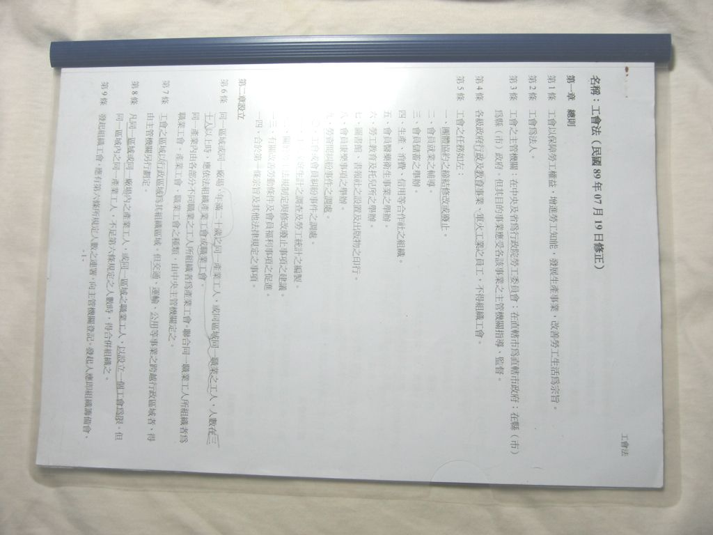

也紀念我們永遠的朋友 李士傑先生（Shih-Chieh Ilya Li）。
淺談長文件的製作～以 Writer 為例 (1)
＊基礎認識篇＊
一份文件到底要有多少頁數才算長文件？這一點，可以說是人言言殊。以印刷來說，單張的宣傳單不算，八頁算是可印刷的文件中，頁數最少的了，要說長文件，雜誌、書籍之類的才夠格。
但對一般使用文書處理軟體來製作文件的人來說，八頁（含）以上，就可以算是長文件。畢竟一般人會製作的內容，大多是內容單純，頁數在三頁以內的說明性文件為主，如公文、公告、履歷、自傳、報名表、活動說明……之類的，只有少數的大型企劃案、研究論文、考察報告等，文件的內容和頁數會比較多而已。
那製作長文件和短文件有什麼差別？到底要注意些什麼？有哪些部份是必須要加入的元素？除了內文的編排要力求專業、精美和易讀之外，還有哪些地方要注意的？其實長文件所衍生出來的技巧，全在於內容長，不容易閱讀和尋找所需要的資料，所以製作上該注意的地方，主要就是要讓閱讀者容易閱讀和尋找資料。例如，長文件應該要加上頁碼，好讓人家能分清楚各頁的前後順序，討論到一半時也可以進行確認，確定與會大眾談得是同一頁的東西，以免發生雞同鴨講的尷尬現象。
除此之外，還有許多地方值得注意，例如裝訂的留邊、目錄、頁首和頁尾加入文件名或企業識別系統（CIS）等資訊，這些地方對於文件的出版、協助閱讀者迅速找到需要的資訊或企業（單位）的形象宣傳等，都大有幫助。因此，本文的重點以「能協助閱讀」為重點，來談長文件的製作，其他因商業考慮所衍生的技巧，不在本文之列。
◎ 閱讀本文前該有的編輯技巧
本文所要分享的內容，並不打算從文件的起始製作開始講起，而是從文件的內容本體已經做好開始，討論如何加上和長文件有關的東西。至於本文的範例教學部份，採用的編輯軟體是 OpenOffice.org Writer，因此閱讀本文的朋友，對於 Writer 必須有一定的操作經驗和技巧。
該具備哪些技巧呢？如果不列出標準讓大家參考，恐怕大家會覺得無所適從吧！所以在開始範例教學之前，先把Attila認為該具備的技巧列於下，以便讓大家心裡頭有個準：
1. 文字的輸入和編修：這一點若不會，那根本就什麼都不必談了。
2. 文字格式的設定：字型的選擇、大小、顏色、粗體、斜體等的設定。
3. 段落設定：包括行距、段落間距、縮排等。
4. 加入圖片與圖片設定：圖片的加入、縮放和圖文安排（如文繞圖）等。
5. 表格設定：加入表格和表格的美化。
6. 圖表設定：加入圖表和圖表的美化。
7. 增加頁數和分頁：不可能每次做的都是一頁文吧？要是連這個也不會，那還說什麼製作長文件？
以上七項是Attila認為製作一份專業、精美文件所必備的基本技巧（想要做的更好，會的當然要更多）。畢竟，連一份文件的內容本體都做不好，那麼學習長文件的其他技巧就屬多餘。
畢竟，一份文件可以沒有頁碼、目錄等和觀念表達無關痛癢的東西，但內容本體卻不能做的不好。因為內容本體都做不好，如何能達到文件最基本的溝通目的？不能達到溝通目的，文件本身就失去意義，那其他的技巧還有何意義可言？要是對這七項的相關技巧還不太熟，建議先去學好再看本文，否則就是捨本逐末，這是學習中最不該發生的事。
◎ 使用的軟體與下載
文書處理軟體相當的多，功能上雖然各擅勝場，實際上是大同小異，只要不是功能陽春的版本，理論上本文所提到的東西都能做的出來。所以本文只選擇其中一種軟體，作為說明與教學之用，也就是開放源碼的 OpenOffice.org Writer。
在此希望大家閱讀本文之後能夠舉一反三，別因為使用軟體之不同，就認為自己不會作或作不出來，或許需要一點時間摸索，但以 Attila 的經驗，應該不會遇到什麼困難才對。
OpenOffice.org Writer 是 OpenOffice.org 的成員之一。有關 OpenOffice.org，大家可以參考下列的網頁：
◎ OpenOffice.org的官方網站：https://www.openoffice.org/index.html
◎ 中文版下載處：https://zh.openoffice.org/new/zh_cn/downloads.html
安裝時，唯一要注意的就是必須要安裝 Java 的運作環境。若作業系統內沒有安裝，那麼下載回來的檔案已內含 Java，需要的話可一併安裝。
◎ 必備的基礎知識
為了範例教學方便起見，這裡所準備的文件，其內容本體已經都做好，只待加入有關長文件的各種元素。雖然在實務上，可能是一邊編寫內容，一邊進行設定，或者先把一些基本的東西先設定好，然後才開始編寫內容。不過為了方便說明起見，這裡還是以文件內容已經編寫完畢作為開始。
既然已經完成了內容本體，接下來要做的，就是針對長文件所需要的部份加以編輯或設定，大家應該要先瞭解其意義和用途，才不會有「不知道加了什麼；加了這個，到底有什麼意義」的現象。
通常，長文件是會被輸出成平面出版品（也就是用紙張印出來，偶爾也要讓 Attila 滿足一下虛榮心）。因為在螢幕上閱讀文字內容，久了對眼睛來說還是蠻吃力的（主因是光影的刺激容易讓眼睛感覺疲勞）和不方便（一定要打開電腦或閱讀器，不能想到就隨時隨地拿來看，如蹲廁所），因此許多人拿到長文件的檔案後，還是習慣列印出來。
既然要列印出來，那麼裝訂就是一個必須要好好考慮的事。萬一是厚厚幾十張紙的文件，不小心「飄」落一地，光是撿起來排好先後順序，可能就要老半天。若是更不小心地跟其他文件混在一起，那就好像是童話故事裡一樣，把一把芝麻混在灰堆裡，要正確的一張一張找出來，可能會讓人抓狂。
好，假設大家已經承認裝訂很重要，那，裝訂有哪些事情要注意呢？其實只有一點，就是要留一點空白的邊（一般稱為「留邊」）。
對一般人來說，裝訂最簡單的方法就是使用釘書機（絕對不是用膠水黏起來！），而在印刷上常見的則有騎馬釘、膠裝、線裝、線膠裝等。不論採取哪一種裝訂方法，一定得要在頁面的邊緣上留一點邊，才能在不影響閱讀的前提下，順利的把長文件裝訂起來。
這些裝訂方法所需要的留邊大小，除了要考慮文件頁數的多寡之外，紙張的種類、厚度（以重量來計算，一般的列印紙以 80 gsm 最常見，有關 gsm，詳見文末的補充說明）和不同的裝訂方法都有影響。單就裝訂方法來說，騎馬釘所需要的留邊最小，但是一般人不大可能會採用，因為它需要特定的設備才行，而且紙張張數也不能太多（超過百張紙就不大可能使用這種方式），線裝和線膠裝所需的留邊最大，通常用在頁數較多的書籍上。關於計算方法，牽涉的因素太廣，在此就不多作說明。（需要的話，請洽詢和貴單位合作的印刷廠）
如果我們採用釘書機來裝訂，紙張為一般的 80 gsm 紙，頁數在廿頁上下（也就是十張紙，以雙面列印來計算）的長文件，文字走向為由左至右，那麼留邊只要左邊 3~5 mm 就可以了。
至於裝訂方式，最簡單的就是在文件左上角以斜向的方式釘上一根釘書針，距離大約是紙張的上緣和左緣大約 3 mm 的地方，如下圖所示：
圖1：頁數不多時，可在文件的左上角釘上一根釘書針來裝訂文件。這裡為求明顯，釘書針和邊緣的距離已經超過 3 mm
這種方式的好處，一是省釘書針；二是翻頁的時候可以把頁面折到後方，書寫備註時有比較多的空間，也比較適合拿著站著討論。（為什麼要站著討論？也許討論地點是在戶外或工作現場，不想站著也不行）；三是留邊所佔的空間最小。
另一種則是距離文件左邊約 5 mm 的地方，把紙張的長邊均分為三，各打上一根釘書針來固定。只是這種方式最好把書背貼上一張固定用紙，以免翻閱久了，留邊會翹起來，影響美觀，也影響保存。
圖2：文具店有賣裝訂專用的塑膠固定夾，配合透明的塑膠封面，不但讓長文件的裝訂更加美觀，也比較不容易污損（此為上述裝訂方式的精緻版）
既然文件已經長到需要裝訂，那麼加上頁碼就是再自然不過的事情。頁碼，不僅僅是要知道文件的頁數多寡，本身也有便於尋找內容的作用，尤其是多人討論同一份文件的內容時，更能顯出它的用處。
頁碼通常是加在頁面的最下方（也有人會加在上方），位置則有居中、靠右邊、靠左邊三種。居中是最容易的一種，不論是左右面翻頁或單雙面列印，都不會出現錯邊的問題。至於頁碼是要加在右邊或左邊，除了版面設計和裝訂在那一邊的問題之外，另外一個考量點是單面列印還是雙面。
版面設計的問題，暫且不談（因為牽涉到美術設計），就裝訂來說，如果確定裝訂是在左邊，頁碼當然就不能加在左邊，反之亦然。至於列印問題，單面列印的頁碼位置只要配合裝訂邊即可（只是有點浪費紙張）。若是雙面列印，問題就比較大。
一般人使用文書處理軟體編輯文件時，幾乎都是直接使用頁面的預設值，殊不知預設值是以單一頁面為主，並非以是像書籍一般的左右頁面對稱來考量。這有什麼差別嗎？舉個例來說，當我們把頁碼設定在右邊，雙面列印之後，第一頁的頁碼當然是在右邊，翻過來的第二頁也是在該頁的右邊，但相對第一頁來說，第二頁頁碼的位置卻是在第一頁的左邊。（大家把它拿起來對著燈光照著看，應該就能懂 Attila 在說什麼）
所以在裝訂的時候，第二頁的頁碼就會在裝訂邊，也就是會被遮住。如果把頁面設為左右對稱，就不會有這樣的問題。所謂的左右對稱，簡單的說，就像我們把書本翻開，左右頁面的版面設定應該是像鏡子鏡射一般，左頁上原本在左邊的頁碼，到了右邊應該變成右邊，如此頁碼就不會出現在裝訂邊了。
解決裝訂和頁碼的問題之後，就天下太平了嗎？當然不！另外一個長文件要考慮的問題，就是目錄。
如果文件的內容真的很多，而且多到已經分章、節，那麼加個目錄是絕對必要的事（註：中文文書內容架構可用的項目有「卷、編、篇、章、節、條、項、目、款」，只是要分到這麼細的機會實在太小，多數只用到「篇、章、節」三項）。在如此浩瀚的資料當中，要是想找特定項目的內容，卻沒有目錄可供查詢，那這份文件真的是具有整人的性質。但說到建立目錄，許多人真的不知道該怎麼做，甚至視之如畏途。
根據 Attila 十多年的工作經驗和職場的觀察，多數人是採用土法煉鋼的方式完成目錄的，也就是把文件列印出來後，用筆和紙另行把標題和頁數紀錄起來，然後在文件起首處另行開闢一頁，慢慢的一字一字輸入目錄。說真的，這種方法實在是笨到天邊去了啦！因為一旦內容有變，還得仔細重新比對頁次，然後手動一項一項修改目錄。都已經採用電腦和文書處理軟體來建立文件，如果不能讓它們自己根據內容來建立和自動更新目錄，那電腦還算是能快速處理資訊的機器嗎？請不要讓電腦蒙羞！
為何這麼多人不知道怎麼建立目錄呢？軟體功能不夠熟悉和使用機會不多固然是重要因素，最主要還是不知道文書處理軟體建立目錄的邏輯。
要建立目錄，首先要讓文書處理軟體知道那些東西是要抓進來當目錄，因此第一步驟就是先指定哪些內容是要作為目錄。通常會作為目錄的內容，不外乎是標題，如篇、章、節的標題，但既然是長文件，標題肯定也不會少到哪裡去，要怎麼指定呢？總不能在每個標題前建立一個識別符號吧？（雖然這曾經是個被採用的解決方法，不過還是挺笨的）
目前的作法是利用樣式。什麼是樣式？簡單的說，樣式就是把某些東西的格式設定全部紀錄起來，當其他相同性質的地方也要設定成相同格式的時候，就只要套用相同的樣式即可，不必從頭一一把相關格式再設定一遍。（不少人用了很多年的文書處理軟體，恐怕還不知道樣式這玩意是什麼，更別說它的作用）
樣式能設定的範圍頗廣，最基本的有字元和段落的樣式，專業級的軟體還可以建立表格和物件的樣式。在長文件的製作上，樣式是非常重要的，因為長篇大論下來，要讓相同性質的段落，如篇標題、章標題、節標題、內文、圖說、附註……等，都能正確無誤的使用相同格式，除了透過樣式來套用，沒有更好的方法。（格式設定一多，保證到後來會忘記一些細節！）
說到這兒，大夥兒心裡應該隱約知道目錄和樣式的關係了吧？沒錯！既然標題套用了特定的樣式，那麼建立目錄的時候，就指定套用這些樣式的段落為目標，以它們來作為目錄的內容。因此，當文件的頁數有增減，甚至是標題被修改，只要使用目錄更新的功能，目錄內容就可以自動更新，頁次也會自動修改，這樣子才是方便又快速的方法。
至於目錄本身的格式，也可另行設定樣式來套用，也就是說內容來源的樣式，是建立目錄所指定的目標，而目錄本身的文字和段落格式可以套用其他的樣式，如此目錄也可以設定的和內文不一樣，增添變化。只是一般的企劃案、研究論文等，除了因閱讀方便所做的改變之外，通常不太建議大費周章的另行設計樣式，畢竟這不是為了商業出版所設計的東西，不需要花費太多力氣在這上面。（設計成一樣，就比較省事囉！）
最後要談的，就是頁首和頁尾。頁首和頁尾是獨立在本文上、下方（專業術語稱為天、地）的空白區域內，除了加入頁碼之外，通常也會用來加入文件名稱、企業或團體的名稱、Logo、頁次和頁數（如1/30頁；第一頁，共三十頁）或日期等。這些內容，除了企業識別系統（CIS）具有宣傳作用外，其他多屬於協助閱讀者瞭解文件主題為何、目前所在的頁次、文件的建立日期等，講究一點的，當然也會把它當作版面設計的一部分。
若文件內容多的像是書，頁首除了加入文件名，一般還會加上章名或節名，這也是有利於閱讀者尋找資訊的方法之一，只不過這樣的作法必須配合頁面的分隔設定，否則無法在不同的章或節加上不同的頁首，這個功能就不是每個文書處理軟體都有。
有些人會認為，頁首或頁尾加入特定的資訊實屬多餘，因為會讓版面過於複雜，有干擾閱讀之嫌。在實務上來說，這是個見仁見智的問題，最好是就文件的性質和設計目的來考量。通常，Attila 會在文件的頁首加入文件名稱，當要從一堆「收拾整齊」的文件內找出特定的一份，就不需要一份一份抽出來看封面，只要看看右上角的頁首就可以，找起來會比較快。另外就是在沒有裝訂之前，萬一不小心跟其他文件混在一起，頁首也是辨識某一頁歸屬於哪一份文件的好方法。（這種情形不是不可能，像 Attila 的工作會產生很多文件等待「處理」，這種情形並不少見）
至於頁面的安排，如要不要在文件的最前面加入首頁（或者稱為封面），就看所製作的長文件是否要用在正式的場合，目標閱讀者是不是很講究正式的作法。通常正式的長文件，頁面的安排是首頁、目錄頁、本文頁、索引頁（如果有的話）、參考文獻頁、版權頁（也有人放在首頁之後）、底頁（封底）。要把文件內容分成這樣，製作上並不難，本文就不多加著墨。（通常知道怎麼分頁和增加頁數，就知道怎麼做。）
說了這麼多，相信大家對於本文將要提到的長文件製作技巧，應該已經有點概念。只要有耐性的看完底下的實際操作教學，自行製作一份典型的長文件，應該沒甚麼問題啦！
在實際練習之前，Attila 希望大家能先準備一份大約廿～三十頁的文件（這樣才有感覺嘛！），標題的類型起碼要有大、中、小三種，分別對應文件名、篇標題、節標題，篇的標題少說也要有三個，每一篇的節標題大約二至五個，這樣子目錄做出來，才不會覺得太單薄寒傖。
〔補充說明〕
由於紙張的實際厚薄測量不易，因此紙張的厚度通常是以一定數量的紙張，其總重量為何來表示。通常越重的紙，厚度也隨之增加。
我們常見的重量表示法有二種，一是以英磅為單位，一是以公克為單位。以英磅來表示，是一令全紙的總重有幾磅（令是紙張的數量單位，一令為五百張，全紙的尺寸一般為 35 英吋 x 47英吋），例如 150 磅的紙，意思就是 500 張全紙的重量為 150 磅，表示法為 150 lbs。
只是各國對於全紙的尺寸，在定義上略有不同，因此相同材質和磅數的紙，其厚度在不同國家可能有所不同。為避免換算上的麻煩，目前國際上通用的標準為 gsm。gsm 的全文為 grams per square meter，也就是每平方公尺紙張的公克數，例如 80 gsm，就是每平方公尺的紙，其重量為 80 公克的意思。
至於二者之間的轉換，其公式如下：
lbs = gsm x 紙張面積（平方公尺） x 1.1023
gsm = lbs x 0.9091 / 紙張面積（平方公尺）
1.1023 和 0.9091 為公克與英磅之間的轉換係數。
按照公式，80 gsm 的紙約相當於 90 lbs（80 x 0.875 x 1.175 x 1.1023 x 90.664175）。
根據 Attila 的經驗，80 gsm 的列印紙已經夠厚，不論是採用雷射或噴墨來列印，多數不會有列印內容滲透到背面的情形（如果有，最好檢查一下印表機，看看列印濃度是否設定的過高或墨水有滲漏的現象）。若選擇低於 80 gsm，則常會因紙張太薄而導致卡紙、一次捲進多張紙和內容滲透到背面的現象。
（待續）
您也許有興趣閱讀以下文章:
- 淺談長文件的製作～以 Writer 為例 (4) - 2009-06-26
- 淺談長文件的製作～以 Writer 為例 (3) - 2009-06-12
- 淺談長文件的製作～以 Writer 為例 (2) - 2009-05-20
E-Mail：contact@openfoundry.org Address：台北市南港區研究院路2段128號 中央研究院資訊科學研究所 . 隱私權條款. 使用條款